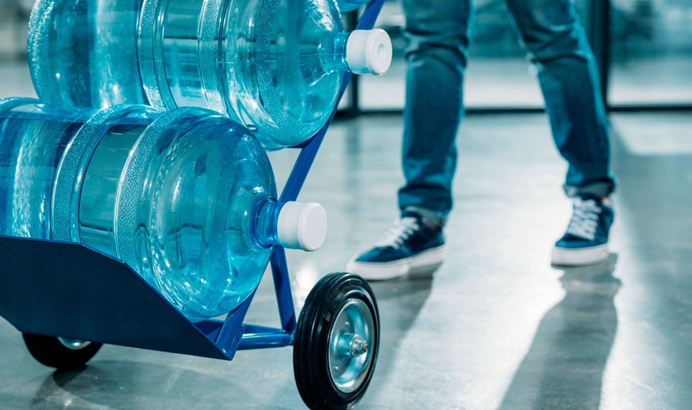
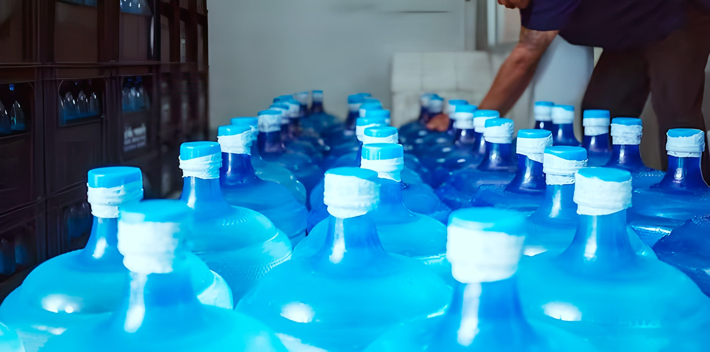
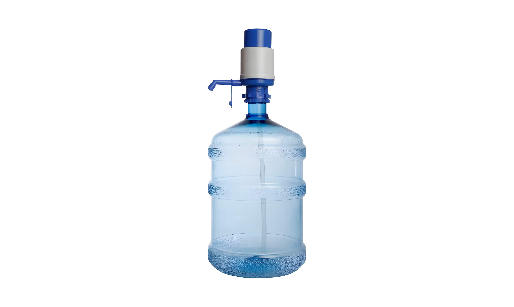
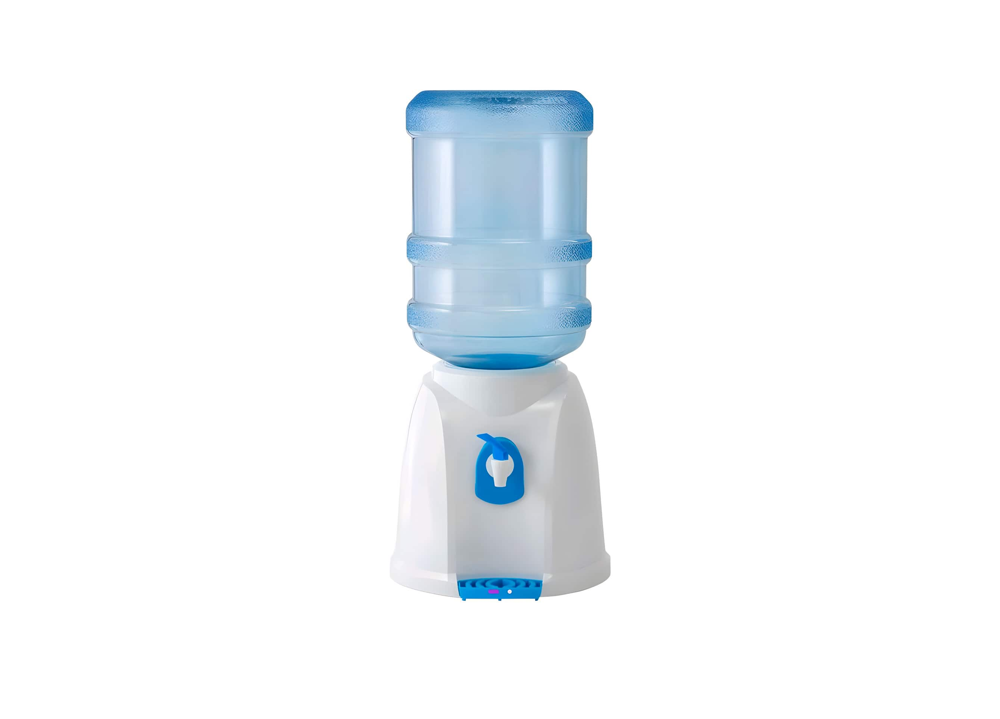
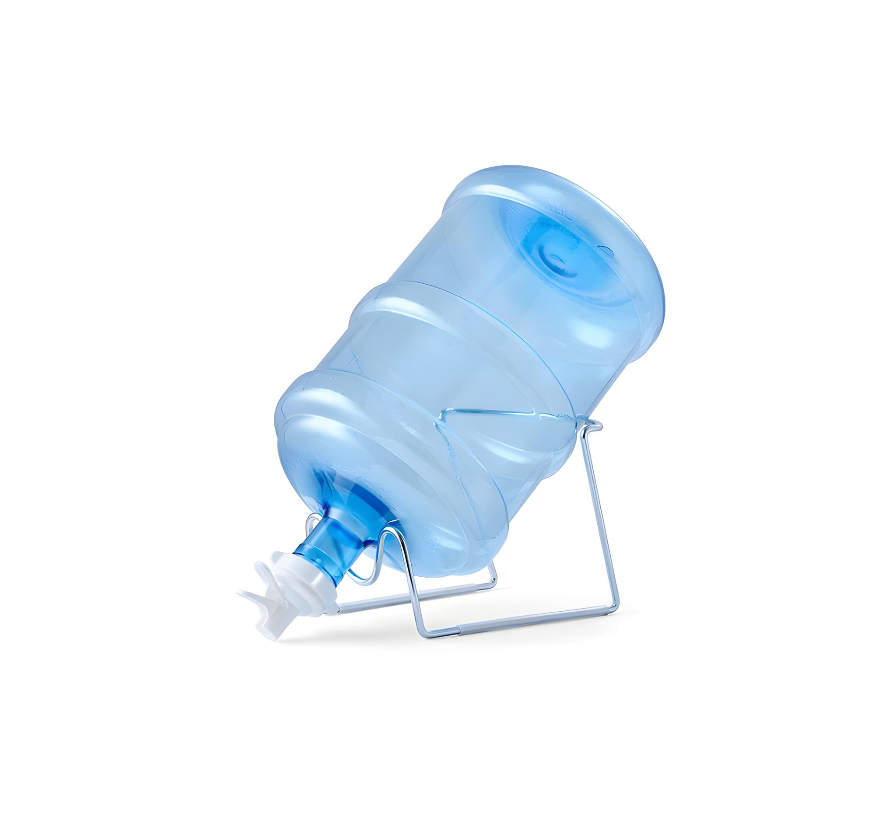
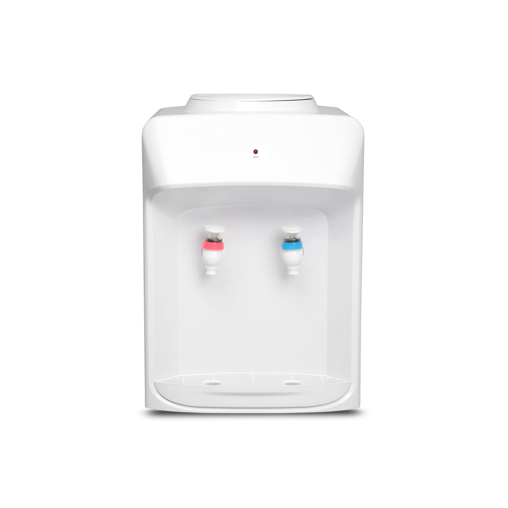
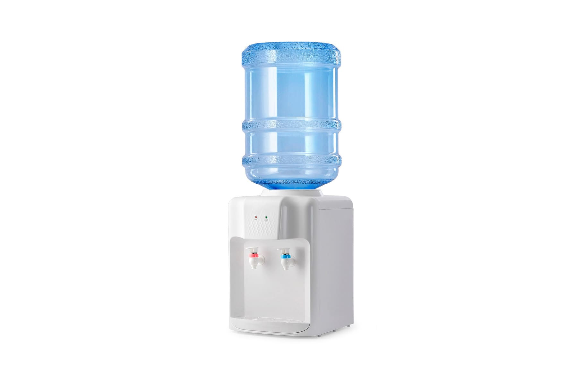
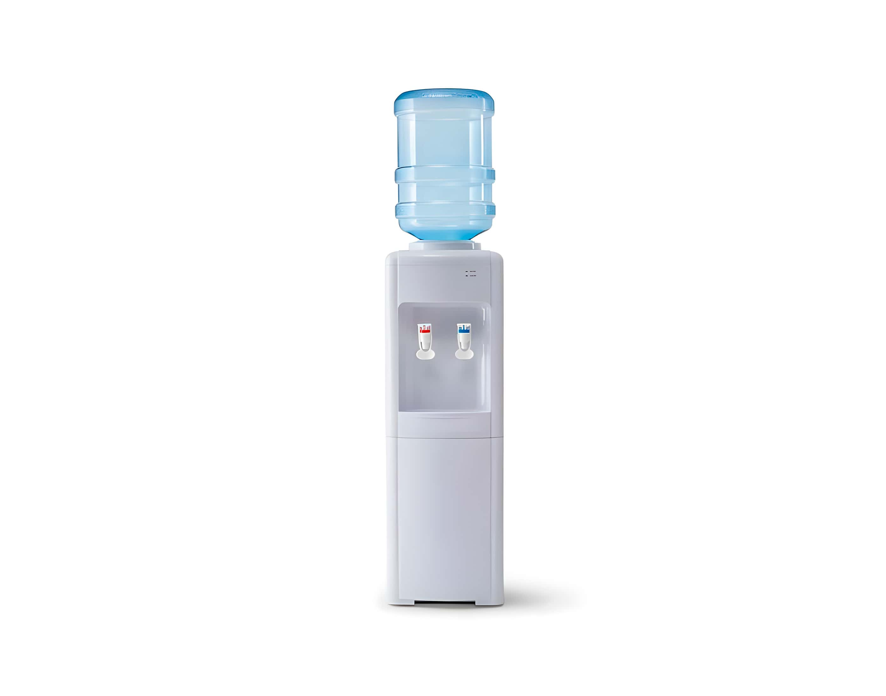

Доставка питьевой воды «Пеледуйская»
Наша продукция и услуги
Питьевая вода "Пеледуйская" - это чистая вода высокого качества, обработанная с использованием системы обратного осмоса и УФ облучения. Она не содержит газировки и идеально подходит для употребления в пищу. Продукт обладает неповторимым вкусом и бесподобным качеством, который сохраняется благодаря уникальному процессу очистки. Вода "Пеледуйская" доступна для доставки и готова удовлетворить потребности даже самого требовательного потребителя. Попробуйте и убедитесь сами в чистоте и свежести этой воды.
Доставка питьевой воды
-

Доставка на дом
Услуга доставки питьевой воды до дома – это удобный способ получить свежую и чистую воду без лишнего труда. Мы предлагаем качественную воду, которая проходит скрупулезную проверку на соответствие всем стандартам. Мы заботимся о наших клиентах и стремимся сделать процесс доставки максимально простым и быстрым. Вы можете заказать доставку воды по номеру телефона +7-914-276-96-45 в удобное для вас время. Наши курьеры своевременно доставят заказ до вашей двери, а вы сможете наслаждаться вкусной и свежей питьевой водой без необходимости посещать магазины и таскать тяжелые бутыли. Выберите нашу услугу доставки воды до дома и наслаждайтесь удобством и качеством!
-

Доставка на месторождение
Наша компания предлагает услугу доставки питьевой воды на месторождения. Мы осуществляем доставку воды на Чаяндинское, Талаканское и Верхнечонское месторождения. Мы гарантируем высокое качество нашей продукции и строго следим за ее соответствием стандартам качества. Мы заботимся о комфорте наших клиентов, поэтому предоставляем гибкую систему оплаты и оперативную доставку в любой день и время. Сотрудничество с нашей компанией – это надежность и безопасность водоснабжения на Ваших месторождениях. Обращайтесь к нам и мы обеспечим вас чистой и свежей питьевой водой на долгий срок!
Продажа и установка оборудование для раздачи воды
Мы предлагаем широкий ассортимент товаров, которые подойдут как для дома, так и для офиса, предприятий и каждого, кто нуждается в качественном и надежном оборудовании. Наш каталог включает в себя различные модели и варианты оборудования для розлива воды. Мы работаем только с проверенными и надежными производителями, чтобы вы могли быть уверены в качестве и надежности приобретаемых товаров. Для дома мы предлагаем компактные и стильные модели, которые могут легко интегрироваться в интерьер. Они идеально подойдут для использования на кухне, где вы сможете свободно наслаждаться чистой и свежей водой. Для офиса и предприятий у нас есть более мощные и производительные модели, которые способны обслуживать большое количество сотрудников. Вы сможете обеспечить своих коллег и клиентов качественной питьевой водой, что способствует повышению производительности и комфорту работы. Наше оборудование отличается высокой производительностью и надежностью, что позволит вам оптимизировать рабочие процессы и улучшить качество продукции. Независимо от того, кто вы - домохозяйка, офисный работник или владелец предприятия, мы готовы предложить вам товары, которые подойдут именно для вас.
Каталг оборудывания для подачи воды
-

Механическая помпа
Удобное и надежное решение для разлива воды. Оснащенная механической помпой, бутыль позволяет легко и быстро набрать необходимое количество воды. Благодаря компактным размерам и удобной конструкции, механическая помпа надевается непосредственно на бутыль, что обеспечивает максимальную удобство в использовании.
-

Настольный раздатчик воды
Удобное и компактное устройство, предназначенное для обеспечения доступа к чистой питьевой воде. Одной из главных особенностей этого продукта является его компактность. Настольный раздатчик занимает минимум места и легко помещается на любой поверхности. Простота использования - еще одно преимущество настольного раздатчика воды. Его конструкция не требует сложной установки и подключения к электросети.
-

Подставка угловая с краном
Функциональный аксессуар, который облегчает процесс использования и дозирования воды. Краник-пробка для бутылей надежно закрывает горлышко и обеспечивает герметичность. Подставка прекрасно подходит для домашнего использования, офиса или на отдыхе. Благодаря своей простоте в использовании, она станет незаменимым помощником для всех, кто ценит удобство и экономию ресурсов.
-

Кулер настольный
с нагревомОдной из главных особенностей этого кулера является его функция нагрева воды. Это означает, что вы сможете получать горячую воду прямо из крана, что идеально подходит для приготовления чая, кофе или супов. Благодаря высокой производительности, кулер настольный с нагревом обеспечивает быстрый и эффективный нагрев воды, позволяя вам сэкономить время и энергию.
-

Кулер настольный
с нагревом и охлаждениемЭто идеальное решение для тех, кто ищет удобный и функциональный способ получить горячую и холодную воду в офисе или дома. С помощью этого компактного прибора вы сможете не только освежиться прохладной водой в жаркий день, но и насладиться горячим напитком в любое время.
-

Кулер напольный
с нагревом и охлаждениемСовременное устройство, которое предлагает идеальное решение для тех, кто хочет насладиться свежей и освежающей водой в любое время. С его помощью вы сможете наслаждаться горячей водой для приготовления горячих напитков или приготовления пищи, а также получать прохладу в жаркие летние дни.
Сертифицированное производство
Очистка воды – это сложный и многоступенчатый процесс, который включает в себя различные технологии и методы. Важным шагом в процессе очистки воды является проведение стерильных операций. Технологические мероприятия, такие как ультрафильтрация, дистилляция и обратный осмос, обеспечивают полное удаление микроорганизмов и загрязнений из воды. Сертифицированное производство в области очистки воды гарантирует соответствие всех процессов и стандартов, установленных регулирующими органами. Это позволяет обеспечить высокое качество очищенной воды. Благодаря технологическим мероприятиям и сертифицированному производству, мы можем быть уверены в качестве воды, которую мы производим.